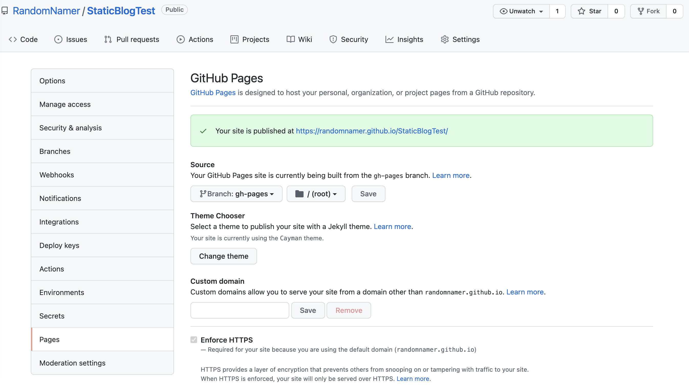
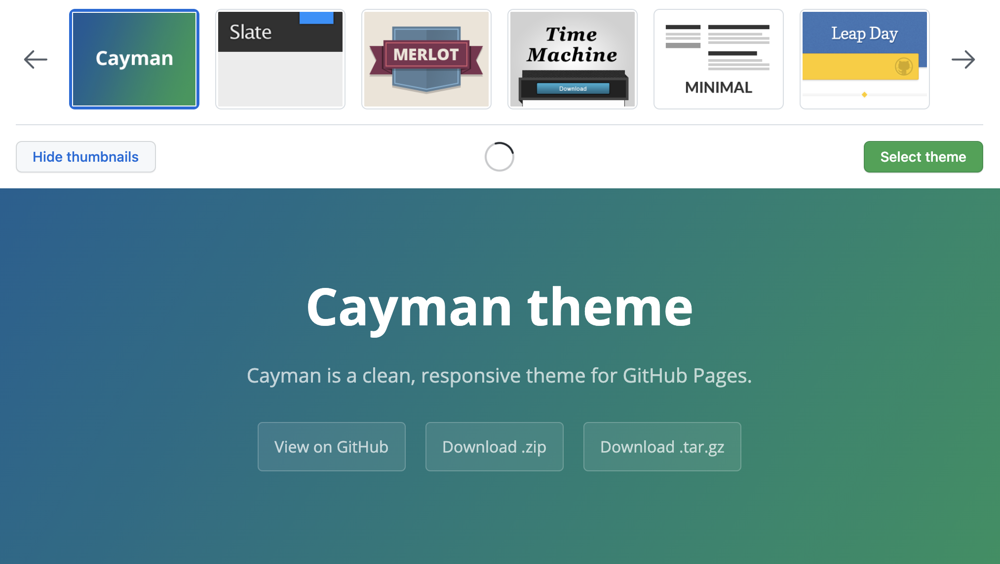
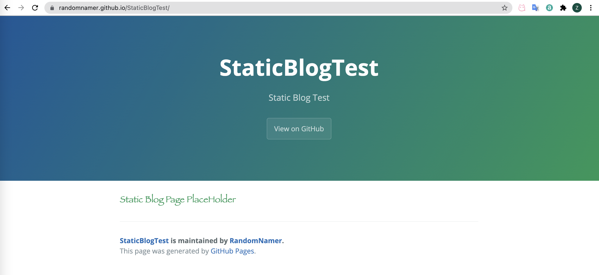
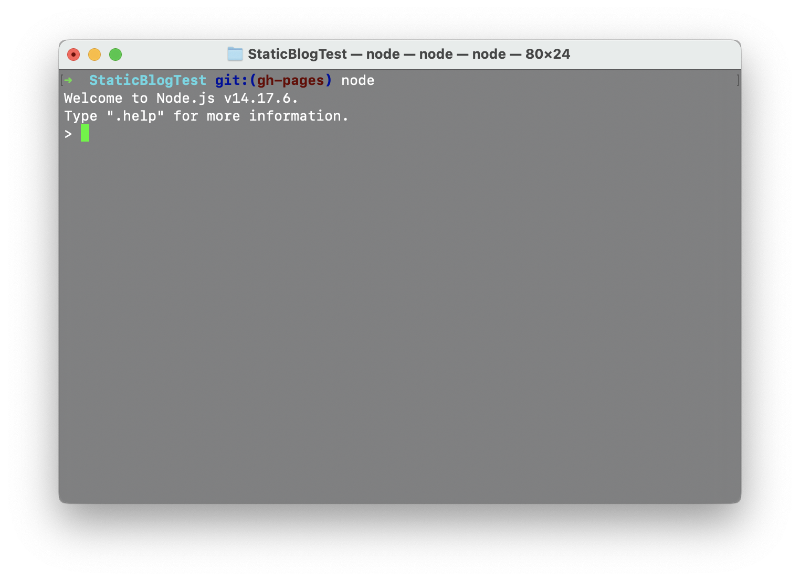
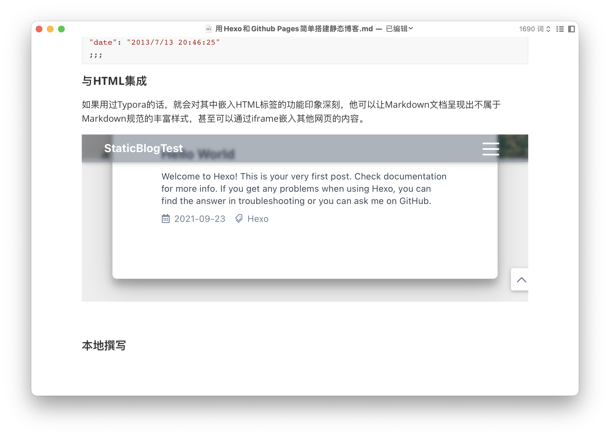
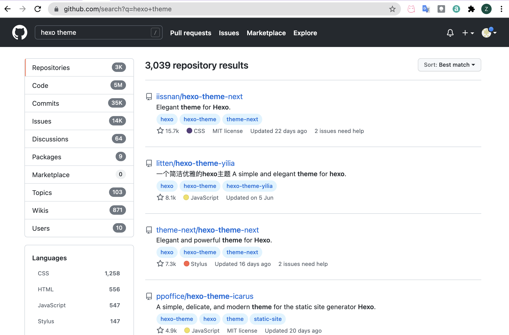

Build a static blog with Hexo and Github Pages
This Page is translated by automatic translation tool. Some text may be inaccurate or ambiguous.
Build a static blog with Hexo and Github Pages
Personal blogs once had a high threshold, so a large number of online blog platforms emerged in the country at the beginning of the century. Once building a personal blog, you need to write your own back-end and front-end, get the domain name resolution service, and pay a lot of money to keep it running at a reasonable speed. In 2021, if you just want to experience your own blog, you don’t need to do this at all. For purely static display purposes (in fact, this is also the most basic and important use of blogs), only a (good-looking) static web page and a hosting platform are required. Github Pages is such a hosting platform. It relies on Github’s Repository, which is easy to use and free of charge. We can write a static front-end directly, push it to the remote end with Git, and then automatically complete the deployment. Hexo is such a static blog generation tool, which can be used to create static blogs more easily. Combine the two to complete your first blog in a few minutes.
Set up GitHub Pages
Create a new Repository in GitHub, and then enable Github Pages hosting in the settings.
Using Theme-Chooser, you can generate a default page with the content filled in by a Markdown document. This markdown document also supports embedding HTML links.
After simple adjustments, we can see a static web page that can be displayed normally, indicating that GitHub Pages has been created successfully.
Use Hexo to generate static blogs
Hexo is a tool that runs on Node.js. In order to use it, you must first make sure that Node has been installed.
npm is Node’s package management tool, we can use it to install Hexo. (On macOS, if it is the first time to install Node, npm may lack file write permissions. You can use sudo chown -R $USER /usr/local/lib/node_modules to add permissions to solve it.)
If everything goes well, we can install Hexo using npm install -g hexo-cli.
After the installation is complete, we have the hexo command line tool, and a blog template can be initialized through hexo init:
To compile it into a usable html page, execute hexo generate. To preview in the browser, you can use hexo server to open a server locally for preview.
deploy
A simple idea is to manually build the blog locally every time, and then push to GitHub to complete the update. But we need to send the constructed web page to the branch used by Github Pages, while the source code stays in another branch.
There are two recommended actions.
- Thanks to the CI function that GitHub can integrate, we don’t have to build manually every time, but ** let the CI system help us build and publish to GitHub
After Git), you only need to use
hexo clean && hexo deployto complete the deployment each time.
Workflow
Here is a brief introduction on how to configure Deployer and the workflow of writing and publishing locally
Deployer configuration and use
To use Deployer, you only need to configure four items in _config.yml, the following is an example configuration:
1 | |
Just fill in the correct repo address, Github Pages branch and commit message.
The operation of the deployer is to generate it once, and then submit the generated file to the specified branch. The commit message is the previously configured message.
During deployment, you only need to execute hexo clean && hexo d to synchronize the local website with the remote
Load resources correctly
For the website to work correctly, the last step is needed, which is to configure the website URL in _config.yml. This URL determines the specific path for all links in the generated page to point to and load CSS, JS and other resource files. If it is not loaded properly, I am afraid it will be like this:
After the correct configuration, perform another (generation and) deployment, and the correct web page can be viewed on GitHub Pages:
1 | |
Write an article
Front Matters
Hexo uses markdown to write, or in other words, uses Markdown’s grammar to write. Hexo has a syntax called Front Matter, which is used to customize each article to a certain extent, such as specifying the name of the page , Embed the cover image, specify the author and tag of the article, etc.
Front Matter can be written in yaml or JSON:
1 | |
1 | |
Integration with HTML
If you have used Typora, you will be impressed by the function of embedding HTML tags. It can make Markdown documents show rich styles that are not part of the Markdown specification, and can even embed the content of other web pages through iframes.
Hexo also fully supports embedded HTML, so that the article can not only have rich customization capabilities, but also be fully compatible with Typora.
Local writing practice
Hexo-cli provides a way to create new articles:
1 | |
By default, it will only create a markdown file in the specified folder. We can use any markdown editor to write, or copy the markdown file that has been written to the source/_posts path to form a new post.
After writing, you can use hexo clean && hexo s to preview
Use theme
The charm of the front-end is that it is more convenient and free to design the appearance you want. Hexo also has a wealth of custom themes, and you can also develop your own custom themes.
There are a large number of topics on Github and Hexo official website
You only need to download the theme to the themes folder and quote the name of the theme (folder name) in _config.yml to use this theme. Different themes provide a wealth of configuration items, which can be further customized. At the same time, all themes are also built using standard front-end technology, and you can also modify and customize the themes yourself.
For example, for the theme Fluid I use here, the content of the article page can only be placed on the right. By modifying its template, you can Define the layout, display the table of contents on the left, and make the text not forced to be centered (space-evenly).
Summarize
After a few hours, Hexo, a static blog generation framework, still gave me a lot of surprises. First of all, article writing is very easy. It can be done directly on the familiar Typora. Front-Matter also allows me to control the style of the article. In the past few years, there have been countless templates and plug-ins contributed by developers from all over the world, and many of them are eye-catching.
This article uses CC BY-SA 4.0 License. You may need to give appropriate credit, provide a link to the license, and indicate if changes were made when referencing this article.